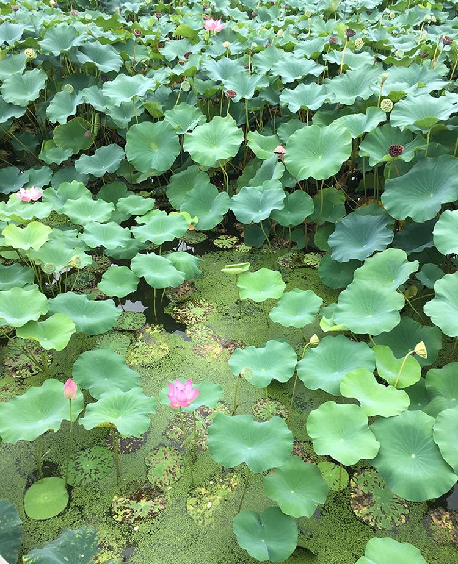

쌍떡잎식물 미나리아재비목 연꽃과 연꽃속 여러살이 식물. 부용이라고도 부른다
꽃말은 소외된 사랑
연꽃(Nelumbo)과 수련(Nymphaea)은 학술적 기준으로
목 단위가 완전히 다릅니다. 흔히 생각하는 연꽃은 프로테아목
연꽃과이고 수련은 수련목 수련과입니다. 인도가 원산지인 연꽃은
연못위에 둥둥 떠 있는 수생식물이라는 이미지만 떠올리기 쉽지만, 실은 논이나
늪지의 진흙속에서도 자라고 관상용뿐만 아니라 식용, 약용으로 쓰이기도 해서
연의 줄기인 연근은 반찬으로 자주 이용됩니다. 이런까닭으로 가끔 여름철 농촌에 가면
벼 대신에 연꽃을 대량으로 재배하는 곳을 찾을 수 있는데 꽃도 아름답
고 향기도 좋아서 축제도 자주 열립니다.
이집트 원산인 수련과의 구별법은, 연꽃은 잎과 꽃이 모두
수면 위로 튀어나와 있지만 수련은 잎과 꽃이 모두 수면에 바짝
이집트 원산인 수련과의 구별법은, 연꽃은 잎과 꽃이 모두
수면 위로 튀어나와 있지만 수련은 잎과 꽃이 모두 수면에 바짝
이집트 원산인 수련과의 구별법은, 연꽃은 잎과 꽃이 모두
수면 위로 튀어나와 있지만 수련은 잎과 꽃이 모두 수면에 바짝
이집트 원산인 수련과의 구별법은, 연꽃은 잎과 꽃이 모두
수면 위로 튀어나와 있지만 수련은 잎과 꽃이 모두 수면에 바짝